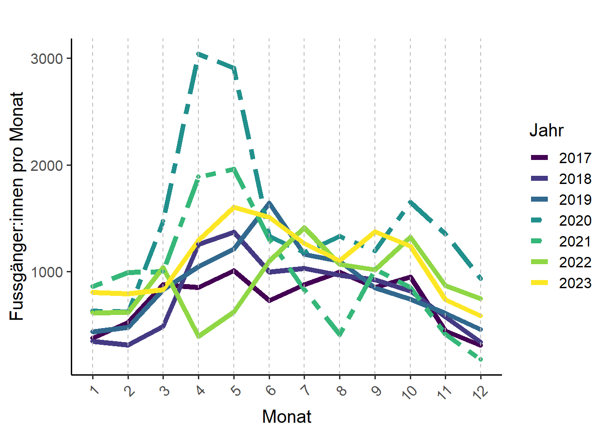
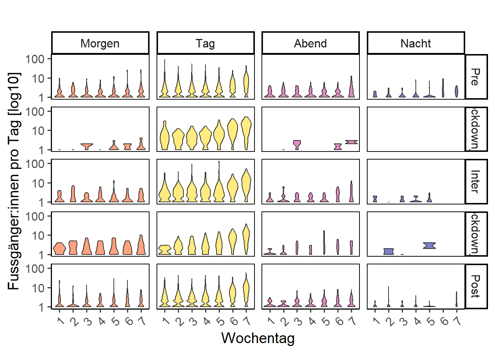

Deskriptive Analysen
Aufgabe 1: Verlauf der Besuchszahlen nach Monat
1a)
Nachdem wir die Projektstruktur aufgebaut haben und die Daten vorbereitet (inkl. aggregiert) sind, machen wir uns an die deskriptive Analyse. Dies macht immer Sinn. Bevor mach sich an die schliessende Statistik macht, muss man ein “Gefühl” für die Daten bekommen. Dies funktioniert am einfachsten mit explorativen Analysen.
Wir interessieren uns in den Analysen für 5 Zeitabschnitte:
- von Anfang Untersuchungsperiode bis vor dem 1. Lockdown (pre)
- Lockdown 1
- Zwischen beiden Lockdowns
- Lockdown 2
- Ende 2. Lockdown bis Ende Untersuchungsperiode
Und dabei immer auch für die verschiedenen Tageszeiten (Morgen, Tag, Abend, Nacht).
- Plottet den Verlauf der monatlichen Besuchszahlen an eurer Zählstelle.
- Auf der x-Achse steht dabei dabei Jahr und Monat (gespeichert im df depo_m), auf der y-Achse die monatlichen Besuchszahlen.
- Zeichnet auch die beiden Lockdown ein (Hinweis: rundet das Start- und Enddatum der Lockdowns auf den Monat, da im Plot die monatlichen Zahlen gezeigt werden).
Haltet euch dabei an untenstehenden Plot:
Hinweis: - Nutzt zum plotten ggplot() - folgende Codeschnipsel helfen euch:
Musterlösung
ggplot(data = depo_m, mapping = aes(Ym, Total, group = 1)) + # group 1 braucht R, dass aus den Einzelpunkten ein Zusammenhang hergestellt wird
# zeichne Lockdown 1; ein einfaches Rechteck. bestimme mit min und max die Dimensionen
geom_rect(
mapping = aes(
xmin = ym("2020-3"), xmax = ym("2020-5"),
ymin = 0, ymax = max(Total + (Total / 100 * 10))
), # das Rechteck soll 10 % grösser als die maximale Besuchszahl sein
fill = "lightskyblue", alpha = 0.2, colour = NA
) +
# zeichne Lockdown 2
... +
# zeichne die Linie
geom_line(...) +
scale_x_date(...)+
theme_linedraw(base_size = 15) +
...- Exportiert euren Plot mit ggsave() nach results. Breite = 20, Höhe = 10, Einheiten = cm, dpi = 1000
1b)
Der erste Plot zeigt, wie sich die Besuchszahlen allgemein entwickelt haben. Interessant ist aber auch, wie sie während den einzelnen Monaten zueinander stehen (z.B. “Waren im Mai 2020 mehr Menschen unterwegs als im Mai 2017?”). Dies zeigt folgender Plot:

- Erstellt diesen Plot und speichert ihn.
Hinweis: Dieser Plot wird erstellt mit dem Argument group, linetype und color innerhalb des _aes()__ Arguments. geom_line() wiederum zeichnet die Linien.
1c)
Unser Fokus liegt auf der dunklen Tageszeit. Wie verteilen sich die Besuchenden also auf Morgen, Tag, Abend und Nacht?
- Erstellt und speichert folgenden Plot:
Diese Codeschnipsel helfen euch:
Musterlösung
ggplot(depo_m_daytime, aes(Ym, Total, fill = Tageszeit)) +
geom_area(...) +
scale_x_date(date_labels = "%b%y", date_breaks = "6 months",
limits = c(min(depo_m_daytime$Ym), max = max(depo_m_daytime$Ym)), expand = c(0, 0)) +
geom_vline(xintercept = seq(as.Date(min(depo_m_daytime$Ym)), as.Date(max(depo_m_daytime$Ym)),
by = "6 months"), linetype = "dashed", color = "black")+
...Aufgabe 2: Wochengang
Nun möchten wir genauer untersuchen, wie sich die Besuchszahlen je nach Phase (Pre, Lockdown 1, Inter, Lockdown 2 und Post) auf die Wochentage und Tageszeiten verteilen.
2a)
- Erstellt dazu einen Violinplot nach untenstehender Vorgabe. Was sagt uns dieser komplexe Plot?

Hinweis:
- Nutzt zum plotten ggplot()
- folgende Codeschnipsel helfen euch:
Musterlösung
ggplot(data = depo, aes(x = Wochentag, y = Total, fill = Tageszeit)) +
geom_violin() +
facet_grid(cols = vars(...), rows = vars(...))+
scale_y_log10()+
...- Warum macht es Sinn, hier die y-Achse zu logarithmieren?
- Gibt es alternative Darstellungsformen, welche besser geeignet wären?
- Exportiert auch diesen Plot mit ggsave(). Welche Breite und Höhe passt hier?
Aufgabe 3: Tagesgang
Von der Übersicht ins Detail. Jetzt widmen wir uns dem Tagesgang, das heisst der Verteilung der Besuchenden auf die 24 Tagesstunden je nach Phase.
3a)
- Berechnet zuerst den Mittelwert der totalen Besuchszahlen pro Wochentag, pro Stunde pro Phase und speichert das df unter Mean_h.
Vergewissert euch vor dem Plotten, dass der Datensatz im long-Format vorliegt.
3b)
- Plottet den Tagesgang, unterteilt nach den 7 Wochentagen nun für die verschiedenen Phasen.
Hinweis: - Nutzt zum plotten ggplot() - folgende Codeschnipsel helfen euch:
Musterlösung
ggplot(Mean_h, aes(x = Stunde, y = Total, colour = Wochentag, linetype = Wochentag)) +
geom_line(...) +
facet_grid(...)
...Aufgabe 4: Kennzahlen
Bis hier hin haben wir in diesem Kapitel v.a. visuell gearbeitet. Für den Bericht kann es aber sinnvoll sein, auch einige Kennzahlen in der Hinterhand zu haben. Wir haben das bereits im Kapitel [Datenverarbeitung] berechnet.
- Reflektiert, welche Zahlen ihr habt und was für den Bericht spannend sein könnte, resp. eure Abbildungen unterstützen oder ergänzen.